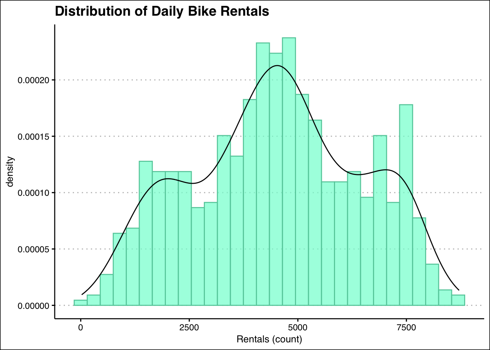
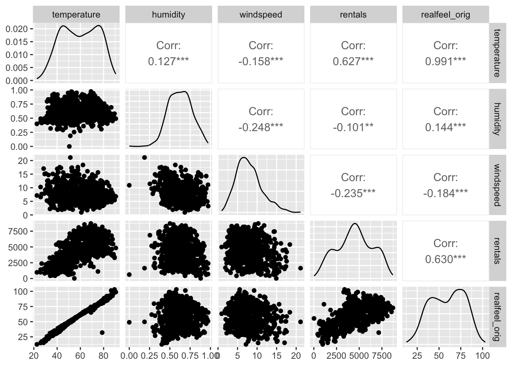

Rows: 731 Columns: 10
── Column specification ────────────────────────────────────────────────────────
Delimiter: ","
dbl (9): season, holiday, weekday, weather, temperature, realfeel, humidity...
date (1): date
ℹ Use `spec()` to retrieve the full column specification for this data.
ℹ Specify the column types or set `show_col_types = FALSE` to quiet this message.
Looking at the data set, we have 10 columns with different features. The features are date, deason, holidy, weekday, weather, tempature, realfeel, humidity, windspeed, rentals. Our data has 731 rows of data.
We can see above that the data information doesn’t directly connect with the information. As we can see the months and seasons don’t reflect the true order. We will need to convert the data into correct factors.
temperature realfeel humidity windspeed
Min. :22.60 Min. : 12.59 Min. :0.0000 Min. : 0.9322
1st Qu.:46.12 1st Qu.: 43.38 1st Qu.:0.5200 1st Qu.: 5.6182
Median :59.76 Median : 61.25 Median :0.6267 Median : 7.5343
Mean :59.51 Mean : 59.60 Mean :0.6279 Mean : 7.9303
3rd Qu.:73.05 3rd Qu.: 75.43 3rd Qu.:0.7302 3rd Qu.: 9.7092
Max. :90.50 Max. :103.10 Max. :0.9725 Max. :21.1266
NA's :27
rentals
Min. : 22
1st Qu.:3152
Median :4548
Mean :4504
3rd Qu.:5956
Max. :8714
As we can see in the data we have 27 missing values for the Realfeel factor. We will have to look into this further.
realfeel
Min. : 12.59
1st Qu.: 43.80
Median : 61.25
Mean : 59.66
3rd Qu.: 74.98
Max. :103.10
bikes = bikes %>%select(-realfeel)
bikes %>%select(rentals) %>%summary()
rentals
Min. : 22
1st Qu.:3152
Median :4548
Mean :4504
3rd Qu.:5956
Max. :8714
`stat_bin()` using `bins = 30`. Pick better value with `binwidth`.

Looking at this this distribution chart it seems that the data we have does not seem to have a strong skew to the data. It does seem like we have a out-lier feature around the 7500 rentals count in our distribution.
ANALYZING NON TARGET FEATURES
bikes %>%keep(is.numeric) %>%ggpairs()

Looking at this graph, we can see how the different features in our data sets correlate to each other. We can see that tempature does have one graph that seems to be a linear correlation with an outlier in there. We can see that most of the graphs in a row do follow the same kind of pattern.